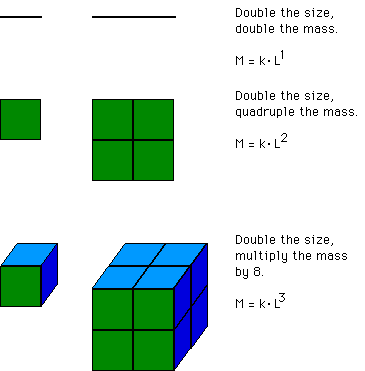

| Box-counting and similarity dimension are two of a multitude of
variations on the notion of dimension. |
| Another, the mass dimension, is based
on the idea of how the mass of an object scales with the object's size (assuming
unchanged density). |
|  |
| The mass dimension,
dm, of an object is defined by |
| (1) locating a point P inside the object (near the middle) and |
| (2) denoting by M(r) the amount of mass of the object inside the |
| circle (sphere if the object lies in space instead of in the |
| plane) of radius r and centered at P. |
|
| If this power law relation |
| M(r) = k⋅rd |
| holds over some range of r values, then the mass dimension
dm = d. |
| Assuming the shape has finite extent, the power relation
holds only for a range of r values. |
| When r becomes too large, the entire object
is contained inside the circle of radius r and M(r) no longer changes as
r increases. |
| When r becomes too small, we are in the realm of atoms, quarks, superstrings,
who knows what? There is no reason to exect the power law relation to hold
on scales smaller than the forces that sculpt the object. |
| Several examples are in power laws. |
| There are other dimensions - Hausdorff, packing, Minkowski, ... many more. Each has
advantages and disadvantages. For simple sets, all agree. But beyond these, the
subject becomes a thicket difficult to penetrate. |